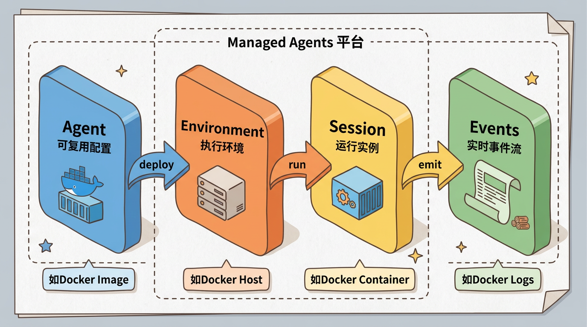
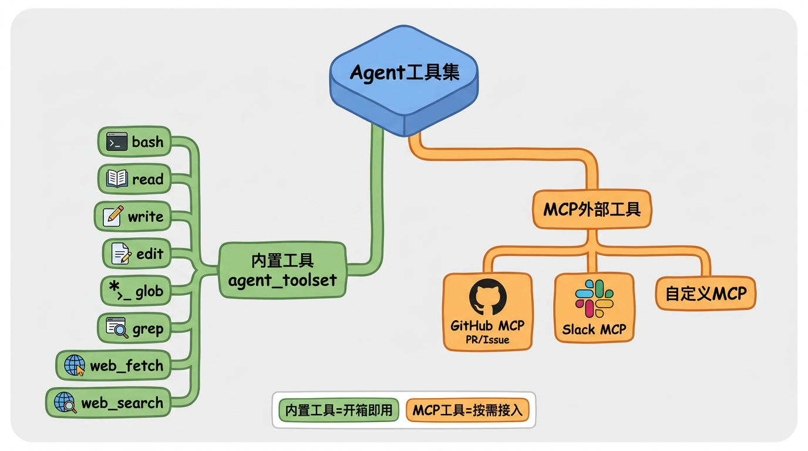
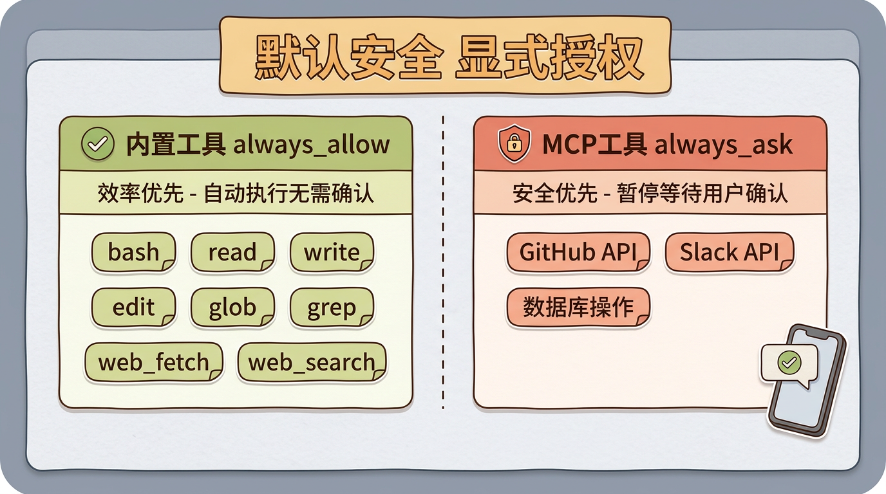
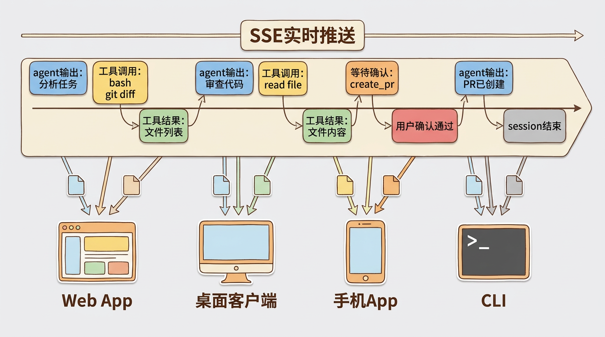

Claude Managed Agents到底在做什么
初次接触 Claude Managed Agents 时，容易将其理解为 Claude Code 的 API 版本——通过 API 创建 Agent，在沙箱中执行代码并返回结果。
但查阅官方文档后会发现，它不是一个产品，而是一套Agent基础设施。它定义了Agent怎么跑、怎么授权、怎么和外部世界交互。这更像是AWS Lambda给Serverless的定义——不是又一个计算服务，而是对”函数即服务”这个范式的基础设施化。
四个核心概念
Managed Agents的模型极简，围绕四个概念构建：
| 概念 | 是什么 | 类比 |
|---|---|---|
| Agent | 可复用的、版本化的配置 | Docker Image |
| Environment | Agent的执行环境 | Docker Host |
| Session | 一次运行实例 | Docker Container |
| Events | Session执行过程的实时事件流 | Docker Logs Stream |

一个Agent定义了”这个AI助手长什么样”——用什么模型、系统Prompt是什么、能用哪些工具、能访问哪些MCP（Model Context Protocol，一种连接外部服务的标准协议）服务。
一个Environment定义了”Agent在哪里跑”——可以是Anthropic托管的云沙箱（ephemeral, isolated），也可以是你自己的基础设施（EC2、Docker等）。
一个Session就是一次具体的执行——用户发起任务、Agent运行、工具调用、返回结果。
Events是Session执行过程中的实时事件流——包括Agent的文本输出、工具调用请求与结果、状态变更等。客户端通过订阅事件流来实时获取Agent的执行进度。
这个抽象为什么重要？ 因为它把”定义Agent”和”运行Agent”解耦了。写Agent配置的人不需要关心执行环境的运维，管执行环境的人不需要理解Agent的业务逻辑。
Agent配置解析
一个Agent的完整配置（基于官方API）：
1 | { |
以下对几个关键字段做展开说明。
tools：内置工具集
内置工具通过 agent_toolset_20260401 类型统一声明，包含8个工具：

mcp_servers：外部工具
MCP（Model Context Protocol）是连接外部服务的标准协议。通过 type: "url" 声明MCP服务端点：
multiagent：多Agent协作
一个Agent配置里可以声明它能把任务委派给哪些其他Agent。这是coordinator模式的基础——主Agent负责任务拆分和调度，子Agent各司其职。
需要注意的是，子Agent的具体角色（如”researcher”、”implementer”）需要在各自的Agent配置中单独定义，而不是在coordinator的配置中硬编码。
这意味着Managed Agents不只是一个单Agent执行环境，它是一个多Agent编排平台。
权限模型——默认安全的设计哲学
Managed Agents的权限模型只有两个选项：
| 权限 | 行为 |
|---|---|
always_allow |
工具自动执行，无需确认 |
always_ask |
Agent暂停，等待用户确认后继续 |
看起来简单，但默认值的设计体现了明确的安全哲学：
- MCP工具默认
always_ask（安全优先） - 内置工具默认
always_allow（效率优先）

为什么MCP默认需要确认？因为MCP连接的是外部服务——GitHub、Slack、数据库。这些操作有副作用（发消息、提交代码、改数据），自动执行的风险更高。内置工具（读文件、搜索）的风险相对可控。
这和手机App的权限模型很像：系统App（电话、短信）默认有权限，第三方App第一次使用相机时要弹窗确认。默认安全，显式授权。
权限是按工具粒度配置的，可以在Agent配置的 tools 条目中通过 permission_policy 字段覆盖默认值。例如，要让bash工具需要确认：
1 | { |
Event-driven架构
Agent执行的过程通过SSE（Server-Sent Events，服务端推送事件）流式推送。核心事件包括：
- Agent的文本输出
- 工具调用请求（内置工具、MCP工具、自定义工具）
- 工具执行结果
- 用户确认请求（权限审批时暂停）
- Session状态变更
一个完整的执行过程可能长这样：
SSE vs WebSocket的选择。Agent的通信模式以服务端推送为主，客户端只需要偶尔发送确认（tool confirmation）。SSE（Server-Sent Events）足够满足需求，而且比WebSocket更简单——不需要处理连接管理、心跳、重连逻辑。

这个事件模型意味着：你可以用任何技术栈构建前端来消费Agent的输出。 Web App、桌面客户端、手机App、CLI——只要能接收SSE流，就能和Managed Agent交互。
和竞品对比
| 维度 | Claude Managed Agents | OpenAI Codex | LangGraph | AutoGPT |
|---|---|---|---|---|
| Runtime | 托管+自托管 | 托管 | 自建 | 自建 |
| 工具协议 | MCP | 自有 | 自有 | 自有 |
| 权限模型 | 内置（always_allow/ask） | 有限 | 无 | 无 |
| 多Agent | 内置支持 | 单Agent | 支持 | 单Agent |
| 沙箱 | 内置 | 内置 | 需自建 | 需自建 |
| 适用场景 | 企业Agent应用 | 代码生成 | 通用Agent框架 | 实验/研究 |
Managed Agents的差异化在于托管Runtime + MCP生态 + 内置权限。你不需要自己搭沙箱、不需要自己实现权限管理、不需要自己维护工具协议——这些基础设施Anthropic帮你做了。代价是绑定Anthropic生态。MCP协议虽然开放，但最佳体验还是在Claude模型上。
注：上表基于截至2026年6月的公开信息整理，各产品迭代较快，具体能力请以官方文档为准。
它解决了什么，没解决什么
解决了：
- Agent的标准化执行环境——不用自己搭沙箱
- 权限管理的最佳实践——默认安全，显式授权
- 工具集成的标准接口——MCP协议
- 多Agent编排——coordinator模式
没解决：
- Agent质量保障——没有内置评测体系，你需要自己搭Golden Set
- 大规模调度——目前是单Session粒度，没有集群级调度
- 成本控制——每次Session的LLM调用成本需要自己监控和管理
- 复杂状态编排——虽然有基础的Memory Store支持跨Session持久化，但复杂的多步状态编排（如长时间运行的工作流）仍需开发者自行设计
这些”没解决”的部分，就是用Managed Agents构建产品时你需要自己补齐的。Managed Agents提供了基础设施和框架，但上层业务逻辑仍需开发者自行构建。